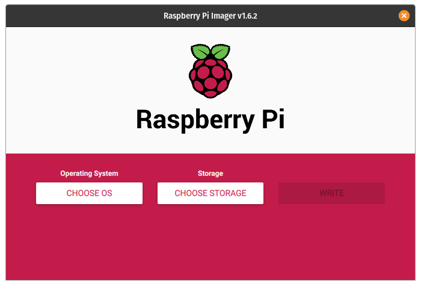
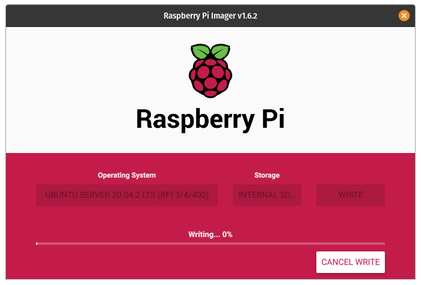

Raspberry Pi
Here we will explaine the setup procedure on a simple home setup by using Raspbery Pi's with Docker Swarm. Alltough Kubernetes with the use of Microk8s is also possible, kubernetes do also need more ram and cpu than Raspberry Pi 3 can give to be realy useful.
Overview
Here we will go thrue the process of setting up docker swarm on a Raspberry Pi, and joining multiple Pis to form a production grade swarm cluster.
This setup can be fully headless or using an HDMI screen and USB keyboard to control nodes of your cluster.
What we will do
- Deploy Docker on Raspberry Pi
- Joining multiple workers to form a cluster
What we have
- Linux type os here we use PopOS 20.04
- Minimum 2 Raspberry Pis tough we will use 3
- A micro-USB power cable for each Pi (USB-C for Pi4) we have PoE Hat
- A USB power-supply with as many ports as you have boards
- A microSD card per Pi (16GB recommended), flashed with an Ubuntu Server image
Setting up
Each Pi will have ubuntu 20.04 LTS intalled as the OS and we will use SSH to loginto them.
Prepare SD card
Warning
This will erase all excisitng content on the microSD card.
First, we need to insert the microSD card into you're computer. To do this we fist install the Raspberry Pi imager:
Once you have done this start the program and select the OS where we will pick Ubuntu 20.04.
- Press
CHOOSE OS

- Scroll down and find
Other general purpose OSthen selectUbuntu. - You then see a list of the diffrent ubuntu OS images that can be installed. We will select
Ubuntu 20.04.2 LTS (RPI 3/4/400)and we uses 64bit. - Select the SD card to write to by pressing
CHOOSE SD CARDand pressWRITEthen wait until its done.

Boot Up
With the new writen SD card put it into the Pi and plug in the ethernet cable and connect it to the power. Wait for a while and we will need to find the IP address to the newly started Pi. For this we will use nmap to search for the devices on the nettwork. Pi 3 starts with B8:27:EB as the MAC address while the Pi 4 uses dc:a6:32.
$ sudo nmap -sP 192.168.10.0/24
Starting Nmap 7.80 ( https://nmap.org ) at 2021-04-21 18:56 CEST
Nmap scan report for ubuntu.home (192.168.10.195)
Host is up (0.0038s latency).
MAC Address: B8:27:EB:##:##:## (Raspberry Pi Foundation)
Nmap done: 256 IP addresses (1 hosts up) scanned in 0.90 seconds
After you got the IP address we can login by using the default user name ubuntu with the password ubuntu. Answear yes when the beeing asked to continue the connection.
ssh ubuntu@192.168.10.195
Are you sure you want to continue connecting (yes/no/[fingerprint])?
The first part of the login will be resetting the default password so first write ubuntu then your own new password to be used.
First thing to do is update the OS by doing:
sudo apt-get update && sudo apt-get upgrade -y
Note
If you get an error saying Connection failed [IP: 2001:67c:1360:8001::24 80] you have an issue by connection over IPv6 to force IPv4 add the following to the apt-get command -o Acquire::ForceIPv4=true. Example for update sudo apt-get -o Acquire::ForceIPv4=true update.
To make it simpler add this to the cli config file: alias apt-get="sudo apt-get -o Acquire::ForceIPv4=true"
Set Hostname
To be able to give names to the Pis we will use the hostnamectl so that we can more easly get the hold of the Pis on the nettwork.
In this setup we will name the Pis with swarm# where the # represents a number. Here we will setup 3 nodes so we will have the name swamr1, swarm2 and swarm3.
To set the hostname use the following command:
sudo hostnamectl set-hostname swarm1
then reboot the nodes after the change by:
sudo reboot
WiFi
On ubuntu we can activate the wifi configuration by using netplan to configure it up. Let's activate the wifi where we have some info allready given:
- SSID the name of the nettwork
- The password of the nettwork
- We want to use DHCP4 configured to get an IP address
So netplan is an network configuration abstraction that uses yaml files for configuration. The files are located at /etc/netplan/*.yaml where we can generate new files as we need. Lets create a new yaml configuration for our wifi connection.
Lets start by finding the name of our wifi by doing
iw dev
This will give an output similar to where we need the wlan0 under Interface.
phy#0
Interface wlan0
ifindex 3
wdev 0x1
addr b8:27:eb:52:87:6a
type managed
channel 34 (5170 MHz), width: 20 MHz, center1: 5170 MHz
Before we start to configure with netplan lets make sure the wifi interface is up and running by doing:
sudo ip link set dev wlan0 up
Lets create a new yaml configuration for netplan by doing:
sudo nano /etc/netplan/01-wifi-config.yaml
And write the information like:
network:
version: 2
wifis:
wlan0:
dhcp4: yes
access-points:
[SSID]:
password: [SSID-PASSWORD]
and change out the [SSID] by the name of the nettwork and the [SSID-PASSWORD] with the password of the wifi nettwork.
Then close save and close the nano editor by doing ctrl+o and ctrl+x and you would see the new file in the netplan folder.
To activate the new configuration do:
sudo netplan generate
sudo netplan apply
And if you want and can do a sudo rebootof the system. Now the system will connect to the wifi nettwork given. To check the IP address do the following:
ip address